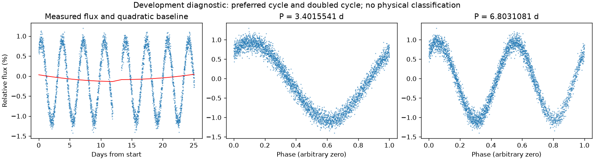
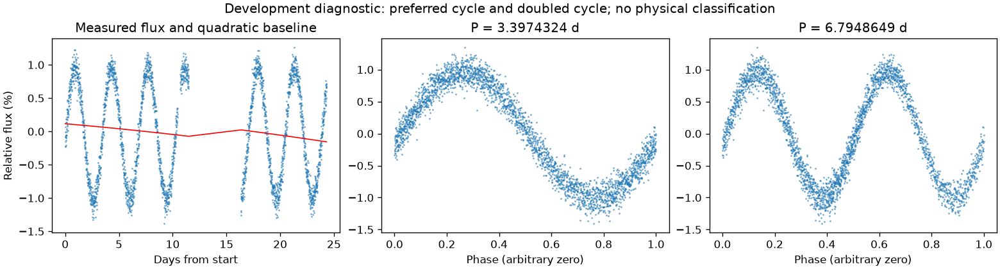

存在来源疑点，保留人工复核
亮度重复周期约 3.39949325 天。这是优选亮度周期，未给出正式误差或物理分类。
第三版周期：3.4015540615614723 天；状态：preferred_lightcurve_cycle。

左图红线是缓慢基线；右面两图去除该基线。若未通过周期要求，两图只展示得分最高的竞争解释。
| 竞争周期（天） | 预测方法与改善 | 各组改善 | 通过初筛 |
|---|---|---|---|
| 3.4015541 | 交替循环：97.0% | 97.0% / 97.1% | 是 |
| 6.8014680 | 交替循环：90.6% | 86.4% / 96.5% | 是 |
| 2.8471756 | 交替循环：5.6% | 8.3% / 2.9% | 否 |
| 6.3435212 | 交替循环：-5.2% | 4.6% / -16.3% | 否 |
| 1.4652904 | 交替循环：-13.5% | -14.2% / -13.0% | 否 |
| 4.2358327 | 交替循环：-21.0% | -9.9% / -34.0% | 否 |
| 2.2053327 | 交替循环：-24.2% | -28.4% / -18.0% | 否 |
| 1.6944436 | 交替循环：-293.1% | -343.0% / -243.1% | 否 |
“预测改善”衡量用一组周期的形状预测另一组，比只有缓慢基线好多少；负数表示更差。搜索和预测共用了资料，因此这不是可信概率，也不是独立验证。
辅助数据检查：背景 SAP_BKG、指向修正 POS_CORR、亮斑中心 MOM_CENTR，或明确提供的仪器通道。
相关性只提示需要检查来源。恒星自身变暗也可能导致亮斑中心移动，不能据此断定是仪器。
第三版周期：3.3974324412036916 天；状态：preferred_lightcurve_cycle。

左图红线是缓慢基线；右面两图去除该基线。若未通过周期要求，两图只展示得分最高的竞争解释。
| 竞争周期（天） | 预测方法与改善 | 各组改善 | 通过初筛 |
|---|---|---|---|
| 3.3974324 | 交替循环：96.3% | 95.9% / 96.9% | 是 |
| 6.7931769 | 交替循环：57.3% | 30.4% / 92.6% | 否 |
| 2.8402742 | 交替循环：6.4% | 4.6% / 8.5% | 否 |
| 5.6605581 | 交替循环：-23.6% | 1.2% / -39.9% | 否 |
| 2.0819270 | 交替循环：-56.4% | -63.1% / -49.6% | 否 |
| 1.4376076 | 交替循环：-56.6% | -54.1% / -59.3% | 否 |
| 2.0903220 | 交替循环：-57.3% | -62.8% / -51.7% | 否 |
| 4.2435753 | 交替循环：-64.9% | -86.8% / -33.0% | 否 |
“预测改善”衡量用一组周期的形状预测另一组，比只有缓慢基线好多少；负数表示更差。搜索和预测共用了资料，因此这不是可信概率，也不是独立验证。
辅助数据检查：背景 SAP_BKG、指向修正 POS_CORR、亮斑中心 MOM_CENTR，或明确提供的仪器通道。
相关性只提示需要检查来源。恒星自身变暗也可能导致亮斑中心移动，不能据此断定是仪器。